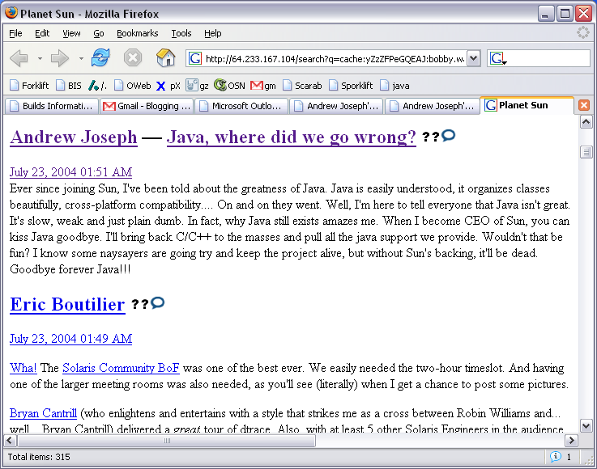

Okay, so I lied about Hawkgirl being the last comic character. I think Booster Gold might be it, but I’m sure there will be surprises ahead when we find out more AndrewApproved characters from comicdom.
“I used to wear yellow sometimes to pretend I was Booster,” recalls Andrew. “Once, I turned to Jen and called her Skeets… she was not amused.” When asked about Andrew’s obsessions, Jen tells us of a particularly memorable situation. “Once, he got confused and put on these angel wings like the kind you see Victoria Secret models wear, and he put on Booster Gold yellow and was some kind of crazy spawn child of Booster and Hawkgirl. It was quite disturbing. He ran around trying to give Keith a kiss while calling him ‘GL’ and kept on yelling at this yellow cereal bowl we had… I think he was singing lyrics to Get Low by Lil’ Jon & the Eastside Boyz or something.”
Booster Gold is considered to be dead in current D.C. continuum. “I sat in a corner of my room for days with the Skeets bowl on my head,” Andrew sobs.

In our final installment of AndrewApproved comic book characters, we bring you Hawkgirl! “She’s my favorite in the Justice League,” remarks Andrew. “I wish I could go to sleep at night with Hawkgirl hugging me with her wings. They’re beautiful.”
When Hawkgirl was kicked out of the Justice League in an animated series episode, Andrew was devastated. “I thought she was going to be gone forever.” In a later season, she returned. “When she came back in the next season, she wasn’t wearing her mask and I thought she was absolutely spectacular!” giggled Andrew. “I think they underplayed Hotgi… Hawkgirl’s powers in the cartoon because she’s obviously much more powerful than the rest of the Justice League,” he comments.
Andrew has been seen drawing pictures of Hawkgirl on his notes with a heart around her. Though we have been unable thus far to obtain a photo of this, we have an artist’s rendition of it based on eye-witness accounts:

Andrew loves the new Batman cartoon by the WB. “It is leaps and bounds better than the old Batman/Superman Adventures cartoon,” he raves. “I love his new chiseled jaw! And look at those kneecaps, oh those awesome kneecaps…” Andrew comments as he slowly curls into a ball and his eyes recede upwards as he lets out a slow moan…
Andrew gets up every day excited because he is one day closer to another The Batman episode. “Sometimes, I only have to wait a few more hours!” he gasps. “One day, this new Batman might replace Jubilee as my favorite character…”
The Batman is in its fourth season on the WB.

“I remember my friend Grace wanted to see Mona Lisa Smile instead of X2, and I thought she was insane… until I saw it myself,” recalls Andrew. “Mona Lisa Smile is now one of my most favorite movies. *giggle* I’ve since learned to love other movies too. I sold the DVDs I used to love like X2, Rocky, and Saving Private Ryan and have replaced them with multiple copies of Mona Lisa Smile (in case one of them got scratched), and I recently purchased The Lake House. Keanu and Sandra are just so dreamy together.”
Reports indicate that Andrew has watched Mona Lisa Smile at least two hundred times since its release. When asked why Andrew loves MLS so much, he responded “in a world that tells me how to think, she showed me how to live.”
Mona Lisa Smile is available for $12.99 on Amazon.com.

Sources have confirmed a rumor claiming that Andrew has had a long time crush on the X-Men character, Jubilee (aka Jubilation Lee). “I’ve never really had Asian fever, but I think Jubilee’s really hot,” comments Andrew. “I see sparks even when she’s not using her mutant powers.”
When asked how this attraction effects his personal life, Andrew answered “well, one of the main reasons why I’m dating my current girlfriend is that both of their names start with a J. Sometimes I pretend that Jen can shoot sparks out of her hands and it’s really cool. Sometimes I play make belief and imagine myself as Static Shock and we’re a crazy dynamic duo. Too bad Static Shock is DC and Jubilee is Marvel… I think of how awesome they would be together and just sigh… snap.” Jen says “at first, I thought this was all a joke, but I think Andrew may have some much deeper issues we’re going to have to deal with. I’m not sure how I feel about this whole Jubilation thing yet. I mean, she can shoot little sparks out of her hands, how am I supposed to compete with that?”
Childhood classmate, Viraj, recalls “Andrew always used to bring Uncanny X-Men #244 to class and read it when we were supposed to read The Berenstain Bears. Honestly, I was a little jealous until I realized how consumed he was when he kicked a Chinese girl, Nancy, in the face when she said that Jubilee didn’t even look Asian.” The incident Viraj recalls resulted in Nancy falling into a metal pole and damaging the back of her skull. When asked about the attack, she recalls, “every time I feel the dent in the back of my head, I think of how obsessed Andrew is over Jubilee. I mean like, jeez, I was just saying she didn’t look Chinese, how was I supposed to know?”
Despite the personal issues this attraction may result in for Andrew, Jubilee is most definitely AndrewApproved.

Once upon a time, as evident by the above screenshot, Andrew used to hate Java. However, we’ve discovered that he has since done a full 180 on this particular programming language and it is now his favorite. “I remember when people used to call me Java Joseph and I used to hate it. Now, it makes me all warm and fuzzy inside. I love not having pointers and having garbage collection and I bet Java’s faster than C/C++!” comments a very excited Andrew.
Andrew has gone on record saying “I used to hate programming in Java, but then I realized that I was just fooling myself and I actually loved it. I went back to school and took CS307 and CS315 four times over and over again because I just couldn’t get enough of those binary trees in Java. I see null pointer exceptions and now I nearly wet my pants in excitement because I get to debug Java code!”
A Sun employee remarked “Andrew Joseph is an example for us all. We are currently in talks with Andrew about being our Java mascot for our next PR compaign. It’s pretty exciting working with such a high profile born-again Java coder.” Sun’s new campaign is expected to launch in the first quarter of 2007.
For Christmas this year, Andrew plans on getting his four children Java Virtual Machines rather than the requested Micro Machines. “If they don’t like it now, they’ll learn to love it like I did” says Andrew.
Java can be downloaded from Sun Microsystems.

Today we have discovered that the Apple iPod is AndrewApproved! Andrew was seen purchasing approximately twenty iPods of various colors according to sources. An eye-witness reports “I’ve never seen a grin as large as Andrew’s when he swiped his credit card and walked out that store.”
Another bystander recalls “the poor fellow attempted to listen to all of them at once, but his ears couldn’t fit all the headphones simultaneously.” Fortunately, Andrew was not harmed as he tried to force all the headphones into his ears.
Andrew was seen driving off in his Mini Cooper (which he believes to be far superior to a Corvette) with the windows down yelling “OMG OMG OMG I <3 APPLE!!!!!! THANK YOU, UNCLE STEVIEEEEEEEEEEE!!!”